整體架構
Atalaia 的哪個部分和哪個部分溝通、走哪條連線、傳送什麼。每張圖下方說明：什麼會傳，什麼不會傳。
Atalaia 還在 pre-alpha 階段。在真實電路板上、於測試台上跑過的有：開機、無線電、按鈕與鍵盤、綁定、無線更新，以及和場地控制器玩完整場遊戲。iOS App 已在 iPhone 上通過檢查清單。其餘只在軟體中做過並測試。
第一張圖的讀法：實線在場地沒有網路時也能運作，虛線需要網路。
1 · 整個系統

會傳什麼
遊戲資料都留在場地內。盒子與控制器透過 USB 數據機以 LoRa 溝通。GM 控制台、玩家的 App、Android 道具，以及盒子要取的檔案，都走場地自己的 Wi-Fi。
不會傳什麼
- 遊戲中沒有任何事要等網路。場地伺服器是選用的。
- 玩家的位置絕不走 LoRa 或 MQTT。
- 場地伺服器從不主動連到控制器：連線一律由控制器發起。
- 盒子從不連網路。模式由控制器去取，韌體由人上傳。
2 · 無線電分層

會傳什麼
每個封包都用遊戲金鑰以 AES-128-CCM 加密並驗證。封包由數據機加封與拆封，所以控制器與數據機之間走線的是明文框。盒子會互相轉送封包。
不會傳什麼
- 位置、名字、token、Wi-Fi 密碼、韌體映像與模式套件都不會走 LoRa。
- 大檔案走 HTTPS 下載。LoRa 只用來傳簡短的通知或失敗回報。
3 · 一場遊戲，從邀請到結束


會傳什麼
空閒的盒子先宣告自己，再由 GM 邀請。加入資料（遊戲 id 與金鑰、角色、隊伍、頻道）以加封方式送達。每個角色都有盒子，遊戲才會開始。之後盒子送出事件，並每 15 秒送一次 STATE。
不會傳什麼
- GM 控制台從不使用 LoRa：它只和控制器溝通。
- 遊戲金鑰只存在於加封的邀請（或卡片）中，絕不放在宣告裡。
4 · 比賽當天的玩家


會傳什麼
玩家掃描海報、固定使用場地的 CA、報到並取得 token。之後 App 接收即時串流。裁判在自己的手機上為測速值簽章。
不會傳什麼
- 位置絕不走 LoRa 或 MQTT，也不會傳給其他角色的玩家。
- 不需要網路：場地伺服器關閉時，這一切都能運作。
5 · 控制器與場地伺服器


會傳什麼
控制器在遊戲中每 30 秒、兩場之間每 5 分鐘，推送遊戲、事件、分數、節點與測速紀錄，並拉取排程、名單與設定。串流負責傳送即時畫面與遠端 GM 的指令，控制器會再檢查一次。
不會傳什麼
- 場地伺服器從不連到控制器，也不持有遊戲金鑰、加入金鑰或 token。
- 離線是常態：事件會等候，之後依序送出。
- 只有兩種選用情況（遠端 GM、遠端 ATAK 中繼）會把位置送出控制器，且只放在記憶體。
6 · 把東西送上盒子

會傳什麼
發行金鑰與模式金鑰負責簽章檔案，公鑰則內建在盒子裡。人工下載已簽章的韌體並上傳到控制器。控制器用 LoRa 通知更新，盒子再透過場地 Wi-Fi 下載。盒子可用 USB 線、NFC 卡或配對碼綁定。
不會傳什麼
- 讓檔案安全的是簽章，不是傳輸通道：盒子寫入任何一個位元組之前，會用自己韌體內的金鑰自行判斷。
- 控制器從不從 GitHub 下載韌體。
- 發行金鑰與模式金鑰是分開的兩組金鑰。
7 · 場地伺服器的登入與帳號

會傳什麼
短效的存取 token，加上每次使用就更換的 refresh token。工作人員角色只在有第二因素（TOTP 或 passkey）的工作階段中生效。單靠社群登入不算第二因素。
不會傳什麼
- 控制器不使用這些帳號：它使用場地的 API 金鑰。
- 社群登入的服務商只會被使用者的瀏覽器與場地伺服器連線，控制器、盒子與數據機都不會。
同樣的圖以 Mermaid 呈現，並附完整說明與設計和程式不一致之處：GitHub 上的 docs/architecture.md →